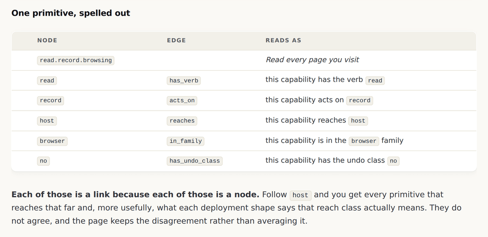
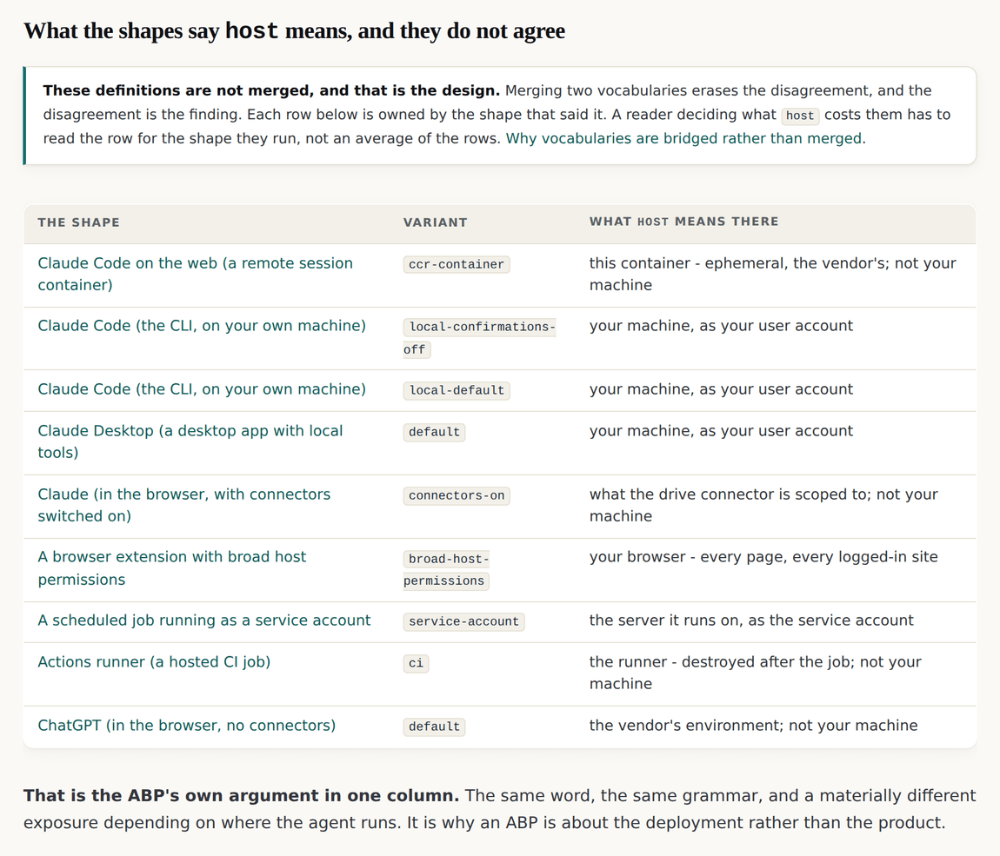
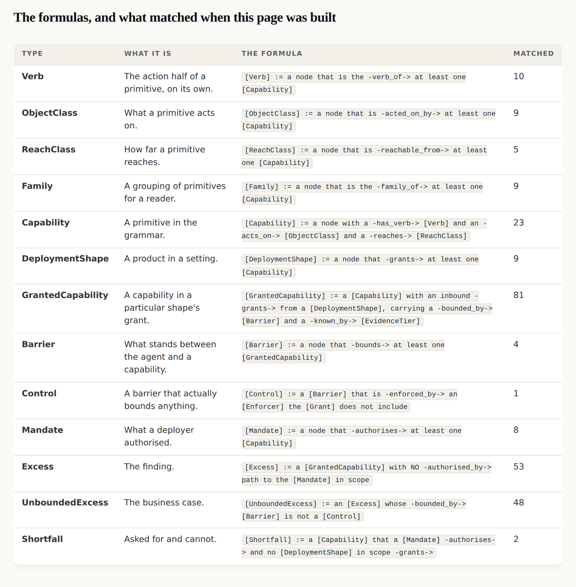
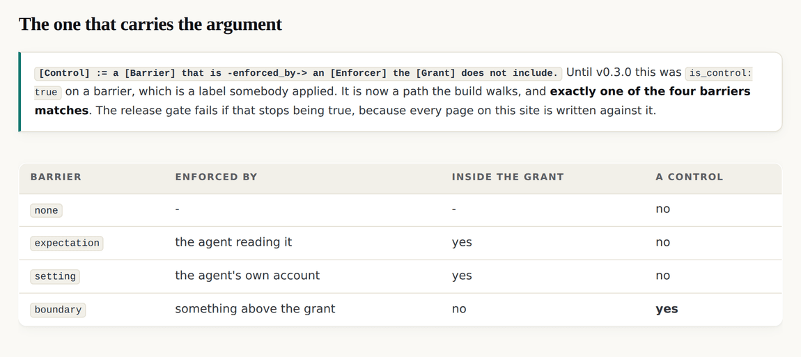
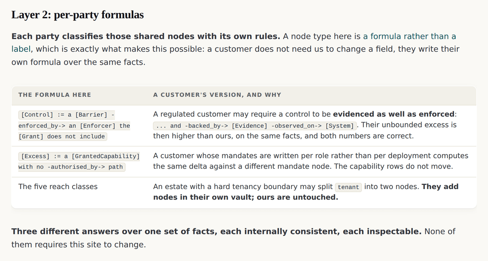

v0.3.0: read.file.project was a string with a gloss beside it, which is schema-first thinking in graph syntax
Thirty three words that existed only as substrings got a node, a file and a page each. A node type stopped being a label and became a formula the build walks. And the reach pages started keeping nine disagreeing definitions of one word instead of averaging them.
v0.3.0 tag, so it shows the site as it stood at that release and not as it stands today. Read on to v0.4.0, or back to v0.2.0.The model pages were a projection of nothing
For two releases this site said, on the graph page, that an ABP is a graph and every document is a projection of it. It was not. A capability was an identifier with a gloss beside it, and the gloss was the definition.
read.file.project was a string, so read, file and project were unaddressable: nothing could link to them, nothing could disagree with them, and a customer vault had nowhere to attach a bridge.
The page that carries the disagreement
The reach class pages are the ones to read, and host is the clearest case in the model. The nine deployment shapes do not agree about what it means, and the page keeps the disagreement rather than averaging it.

That is the ABP's own argument in one column. The same word, the same grammar, and a materially different exposure depending on where the agent runs. It is also the first place on this site where zooming into a node lands you somewhere with its own vocabulary, which is the property the releases six months of releases later would be named after.
Classification stopped being a label
Until this release a barrier carried is_control: true, which is a label somebody applied. A node type is now a required pattern of typed, directed paths that a node either matches or does not, and the build walks it.


Judgment does not disappear, and that objection deserves a direct answer. Somebody still decided that a control must be enforced from outside the grant. What changes is where that decision lives: out of a classifier's head and into a formula that is visible, versioned, inspectable and arguable. You can now disagree with a classification by pointing at a line, which you could not do before.
Fifteen edges, and no generic one
The edge vocabulary arrived in the same release: fifteen edges, each a verb with a distinct and meaningfully named inverse, a stated domain and a stated range. The inverse is not the same edge walked backwards: grants and granted_by have different fan out, and that asymmetry is what stops a traversal exploding.
The construction a customer vault needs
A customer will disagree with some of this vocabulary, and they will often be right about their own estate. The wrong response is to merge their definitions into these, because merging is destructive and what it destroys is the finding.

Parties can disagree about meaning while still agreeing about facts, which is the only stable basis for working together. A customer who cannot accept this site's definition of a control can still accept that their agent can read every file the account can reach, and that is the sentence the ABP needed them to reach.
What the gate found on its first run
A thirteenth check arrived with the graph, and it found something immediately: receive and revoke are in the published verb list and no primitive uses them.
The lexicon · The edge vocabulary · The node type formulas · The three layers · v0.3.0's own release record